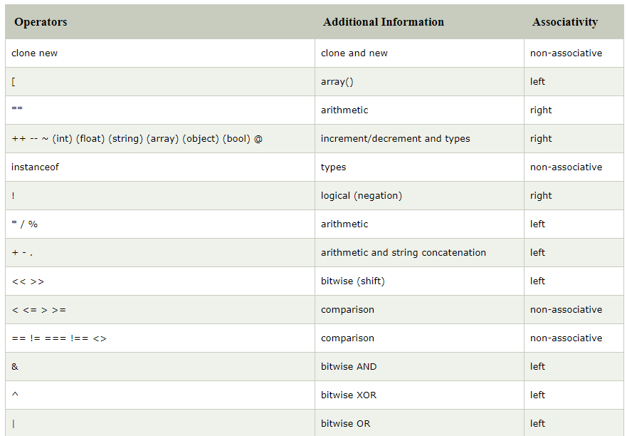
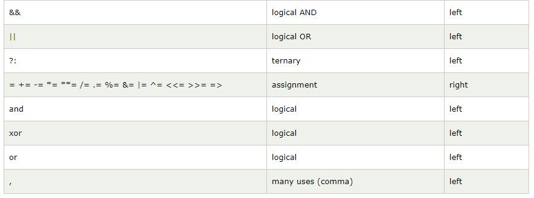

PHP Operators
PHP Operator is a symbol i.e used to perform operations on operands. For
example:
In the above example, + is the binary + operator, 10 and 20 are operands
and $num is variable.
PHP Operators can be categorized in following forms:
- Arithmetic Operators
- Comparison Operators
- Bitwise Operators
- Logical Operators
- String Operators
- Incrementing/Decrementing Operators
- Array Operators
- Type Operators
- Execution Operators
- Error Control Operators
- Assignment Operators
We can also categorize operators on behalf of operands. They can be
categorized in 3 forms:
- Unary Operators: works on single operands such as ++, -- etc.
-
Binary Operators: works on two operands such as binary +, -, *, / etc.
- Ternary Operators: works on three operands such as "?:".
PHP Operators Precedence
Let's see the precedence of PHP operators with associativity.

